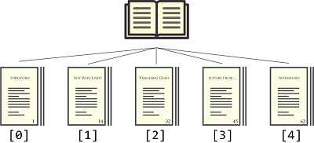
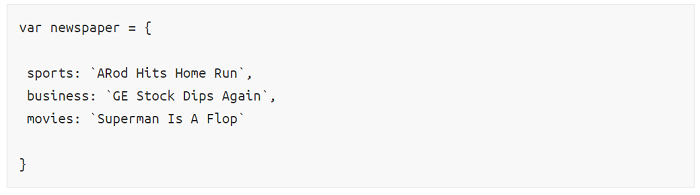

Массивы и объекты в JavaScript как книги и газеты
Массивы: порядок данных очень важен Взглянем на нашу небольшую книгу, если бы она была массивом:
var book = [`foreword`, `boyWhoLived`, `vanishingGlass`, `lettersFromNoOne`, `afterword`]; Кстати, обратите внимание — это первые три главы книги «Гарри Поттер и философский камень». И вот как можно визуализировать их: 
Надеюсь, что никто не глядит на оглавление книги и не думает: «Хм, эта глава выглядит
интересной, пожалуй начну с неё». Порядок глав в книге указывает, как её нужно читать.
Когда нужно перебрать массив, то используется номер для каждого элемента массива.
Массивы — это структуры данных, где нумерация начинается с нуля, поэтому мы начинаем
в них отсчёт с 0, а не 1.
Так что, если вы хотите получить доступ к первому элементу массива, то пишите так:
вот что получите
`foreword`Если нужна третья глава, то напишите так:
book[2]Вы читаете книгу, основываясь на порядке глав в книге, а не по названию этих глав.
Посмотрите как бы выглядела газета в виде объекта:
А вот так можно визуализировать её:
Читая газету, мы не обязаны читать её «от корки до корки». Можно начать чтение с любого интересного для раздела. Неважно, где именно этот раздел находится в газете, контекст сохраняется. Это и отличает газету от книги, где важна строгая последовательность чтения глав.
Объекты хранят информацию в виде пары ключ-значение. Вот как это выглядит:
key: valueЕсли хотите начать читать газету с новостей бизнеса, то использовать следует такой ключ:
newspaper ['business']илиp
newspaper.business